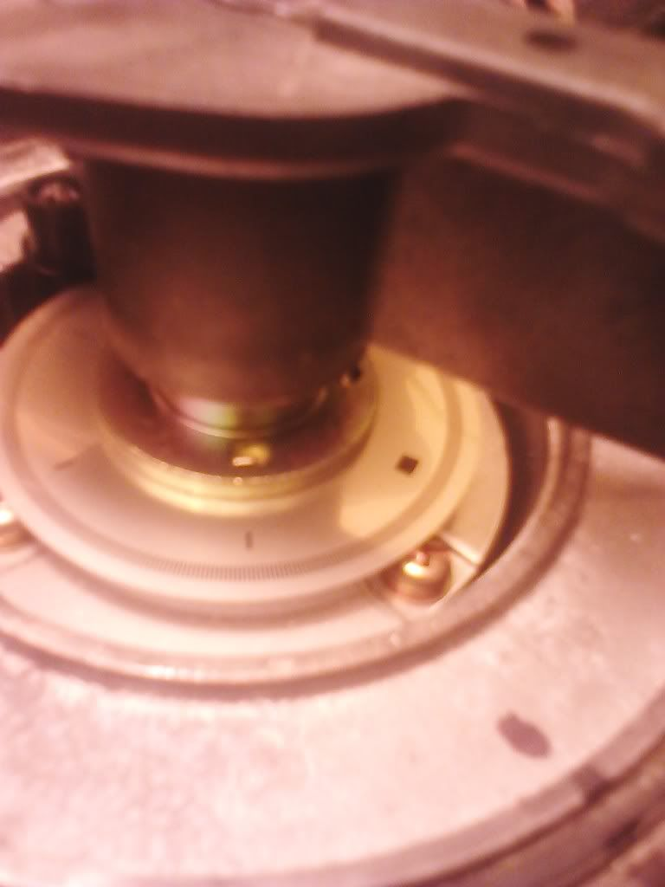

-
Those of you running distributor-based ignition on your cars or even just using it as a cas, this pertains to you.
I have in my possession a d21 pathfinder vg30e dizzy and a maxima j30(fwd bastard cousin to the a31 cefiro) dizzy in my hands now. The rotor relation to the square (reset?) slot is different on both. I will take those disks out tomorrow and post them here. If any of you have some free time i'd like to see some 300zx and 280zx trigger disks as well. You dont have to take disk OFF, just remove the bronze cover.
I want to see how bad the square slot location variation is between different vg30 implementations. It's relevant intell across the board and i feel it should be shared.
Here is a D21 dizzy and a j30 dizzy disk respectively.
D21 Note the square slot is right there at the rotor edge that makes the jump to the points.

J30. This is a poor pic but you get the idea. It's almost 210* out compared to the pathfinder dizzy. Screw for rotor is always 180 of the points contact.
 vg30'd s13 in progress. Shocks. Pegs. Lucky.
vg30'd s13 in progress. Shocks. Pegs. Lucky. -
It's not the rotor or the disc that's different, it's the mounting sleeve with the 2 holes -
You are correct G-E! Thanks!
What i'm trying to figure out is wtf nissan was thinking putting out so many different clocking orientations and what purpose that had. I see a bunch of loose talk about it but nobody has attacked it and says "just get X dizzy". That's a cop out answer and it's unacceptable. I'd like to find out why some dizzys work and some dont and this is my attempt at a thorough TECHNICAL investigation.
So i was busy with other things the past couple of days but didn't forget about ya'll so here's what i got on the clocking:
D21 pathfinder vg30e (not vg33e)
J30 3rd gen maxima vg30e
If anyone has the following, please post them in the thread:
280zx
First gen maxima
turbo 300zx
na 300zx
s12/200sx
Frontier
Quest
Literally takes 5-10 minutes to tear a distributor down, another 3 minutes to take a pic with your phone/cam and upload it and another 5 or so to post it. So maybe 30 minutes total of someones time to scratch a distributor off the list. I'll do what i can to scratch em off too.vg30'd s13 in progress. Shocks. Pegs. Lucky. -
people say "get X dizzy" because they've fooled around with trying to get the other ones to work.
the pathfinder, maxima 16E01, and 300zx distributors all have different disc collar orientations. we've established that already.
you can answer 3 of your requests if you stop "copping out" and search. Black89Turbo and I posted pictures.
don't make it seem as if you're the only guy on the block who's figured this out and wants a technical investigation or something. you're late to the game, bruh. -
http://z31performance.com/showthread…or+differences
That showed me a glimpse into the scope of what i was asking for while i was searching. No clear answer about the square slot orientation other than "it runs like crap" or "it looks different".
WHY THE FUCK DOES IT RUN LIKE CRAP? "WRONG DISTRIBUTOR" is not acceptable because X vg30 runs on X distributor just fucking fine. You tell me why that shit doesn't work. I'm using a w series maxima cas on a w maxima engine mostly. Only change is z31 intake and rods. Why the FUCK does 1+1 not equal 2? You find that info in a search put in technical format that pops up on this thread besides the one above.
What the hell does the stock ecu know that you can only translate into "search" like i haven't already? May be late to the "game" as you "homeboys" call it these days but i know how to use the fucking search bar....google too. Asshole.
Dont call me bruh. My thoughts when you walk into my threads and completely bomb them.
http://www.youtube.com/watch?v=EwT4Rl2uGJY&oref=http%3A%2F%2Fwww.youtube. com%2Fwatch%3Fv%3DEwT4Rl2uGJY&has_verified=1[/video]] vg30'd s13 in progress. Shocks. Pegs. Lucky.
vg30'd s13 in progress. Shocks. Pegs. Lucky. -
The issue is no one has compared the position relative to the rotor cap, we can install ANY dist with the wheel oriented correctly relative to the sensor (at tdc for example), but that may or may not line up with the spark plugs on the cap....
Someone could collect all the various models and compare which angle the sensor pickup faces, the cas wheel, the rotor and finally the cap, having a table of all those four data points would let us see which ones are compatible without ripping and replacing…
Of course you could say this is all very unnecessary, the z31 dist can be upgraded with a newer cas, which is pretty much the equivalent of getting a new dist, while guaranteeing correct fitment/orientation -
It isn't really necessary to replace the distributor or the optical disc. Pretty much the only thing in it that goes bad is the CAS, and that can be replaced with one from any number of cars/trucks.Prius… because Pretentious wouldn't fit across the back of the car…
Cheap, Fast, Reliable - pick any two
My 1986 Turbo Build -
slammedfc;340782 wrote: http://z31performance.com/showthread…or+differences
That showed me a glimpse into the scope of what i was asking for while i was searching. No clear answer about the square slot orientation other than "it runs like crap" or "it looks different".
WHY THE FUCK DOES IT RUN LIKE CRAP? "WRONG DISTRIBUTOR" is not acceptable because X vg30 runs on X distributor just fucking fine. You tell me why that shit doesn't work. I'm using a w series maxima cas on a w maxima engine mostly. Only change is z31 intake and rods. Why the FUCK does 1+1 not equal 2? You find that info in a search put in technical format that pops up on this thread besides the one above.
What the hell does the stock ecu know that you can only translate into "search" like i haven't already? May be late to the "game" as you "homeboys" call it these days but i know how to use the fucking search bar....google too. Asshole.
Dont call me bruh. My thoughts when you walk into my threads and completely bomb them.
http://www.youtube.com/watch?v=EwT4Rl2uGJY&oref=http%3A%2F%2Fwww.youtube. com%2Fwatch%3Fv%3DEwT4Rl2uGJY&has_verified=1[/video]]
It is very well an acceptable answer because taking pictures is not going to solve anything unless you start posting actual numbers of how far out or different your sleeves make the other discs sit in the distributor. Without that information it's just "this is different. lulz!" which doesn't mean anything if this is to be a technical assessment.
Is it a technical assessment, or what are you trying to accomplish here, other than a photo-documentary from the offices of Detective Blurry-Cam?
Listen to how naive you sound.
X vg30 runs on X distributor just fucking fine.
pathfinder vg30 runs on pathfinder distributor just fucking fine.
maxima vg30 runs on maxima distributor just fucking fine.
z31 vg30 runs on z31 distributor just fucking fine.
I can't speak for everyone with pathfinder distributors and whether or not they had to tweak their timing or twist the hell out of the distributor to get to 15 degrees base, but I know for a FACT that the 16E01 maxima distributor is 99% of the ignition problem I had on my z31, and I spent two fucking years pulling hairs out replacing EVERYTHING except the distributor- because it was a brand new one, and it "worked", and was marketed as good for maxima and 300zx.
I don't have a pathy distributor to compare, so I can't say how that would run on my car. But the maxima CAS collar is probably oriented for a maxima ECU to understand. Don't ask me why, or how. Because I'm not going to shell out money for a maxima ECU to test.
I will just cut to the chase and get a Z31 ecu and call it a done deal because I have no use for a pathy distributor, and I am running a Z31 ecu. Makes sense to me! In reverse, if I had a Z31 ECU- I would now just run a definite Z31 distributor from a JY pull and change the innards myself if I ever have to rebuild it. I know better now. Some people run the pathy dis just fine with z31 ecu… maybe that one is an exception- but the maxima one is too far out. Again- take some measurements.
Why not post some numbers or make a mounting jig on a piece of wood with a paper under a deck screw so that you can secure the collar in the same orientation all the time and measure how may degrees out each wheel YOU have is, then someone can copy your jig and do it with the distributors they have. Your pictures don't do your findings justice because you are not even holding the collar and discs in the same orientation in either of your pictures. It would make sense if you aligned the flat side of the D shaped hole in the center to roughly the same orientation in both pictures so I can make sense of wtf im looking at here.
I would start but I only have a Z31 distributor now, because I beat the shit out of the maxima one.
I'm not walking into your thread saying "go fuck yourself"- but this thread- as it currently stands. even with your pictures. is useless. -
The orientation differences are likely from base timing changes through the years etc.
Also cap wiring positions changed as well with other car models.Hmmm, Whats next?
Full Size Bronco, smashing shit.
84ZXT -
Here's an idea. This is crazy, i know. What happens when you......maybe cut the tabs off that stupid alignment washer and for some strange reason decided to skip over that whole using a nissan ecu at all idea?
What if 6x60*=360*?
Then what if arc length = degree X radius?
Then what if you the shit no longer mattered?
http://3.bp.blogspot.com/-ZSg2jhUT-k…00/mr-chow.gif
Pathfinder sleeve works well on both pathfinder cas and 3rd gen maxima cas for me. cut off tabs, clock til you get that shit proper.
Science bitches.
Shroomy +1 thumbs up for you for mentioning the dizzy caps. Slots may not correlate the way the rotor sleeve/points to create a spark event at proper timing.vg30'd s13 in progress. Shocks. Pegs. Lucky. -
Haha I see 4 posts with nothing new added since my post… cmon, keep up guys -
I don't see where you gave the info I did, the way I did. That is unless we are mind readers and can read more into what you barely touched on for the reason of the difference. maybe next time you can fully explain yourself and be that cool dude you seem to enjoy trying to be.G-E;341506 wrote: Haha I see 4 posts with nothing new added since my post… cmon, keep up guysHmmm, Whats next?
Full Size Bronco, smashing shit.
84ZXT -
Sorry I'm not cool like you, I didn't theorize whether the changes are because of base timing differences, maybe next time -
*puts moderator hat on*
I am getting annoyed at all the cuntiness on here lately. Knock it the fuck off and stop being like a bunch of 14 y.o. girls. Let the original poster make his point and help him find his way to the answers.
-
Not much to say other than I have a running car. Pathfinder dizzy, maxima cap, 9 psi DAILY DRIVEN on like 17* base timing or something like that. I only trigger off the 6 slot ring, my ecu doesn't care about the 360* ring or square "reset" slot so theoretically i can get my shit to run off any cap and any vg30 dizzy combo. Just clock and get the timing light out i guess.
The 3rd gen maxi dizzy is clocked like 45* off engine centerline. The z31 cap is parallel to centerline. D21 cap is circular You can only bolt them in a certain way to get your cap to fit depending on cap and that may throw your base timing way off if your car can even start. I hope to get to compare z31 with a30 tomorrow. I never seem to find 300zx distributors when i go picking and am LOOKING for a z31 distributor. Lol.
As far as the base timing changes that may have had to do with compression and/or fuel delievery. Stock injector size, compression ratio, the intake/exhaust/etc changes…that could merit these changes we're seeing in the fsm's. Still haven't found a clear answer. 15-22* is what my research has picked up… My guess would be the ones on stock ecu without turbos are chilling with 20*+ base advance to make more power without touching the ecu.vg30'd s13 in progress. Shocks. Pegs. Lucky.

{kind=link}
Copyright © 2006–. All rights reserved. Privacy Policy